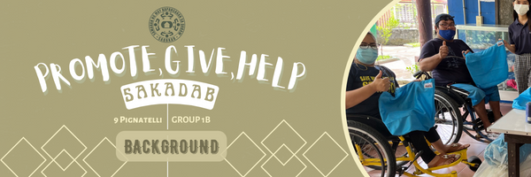
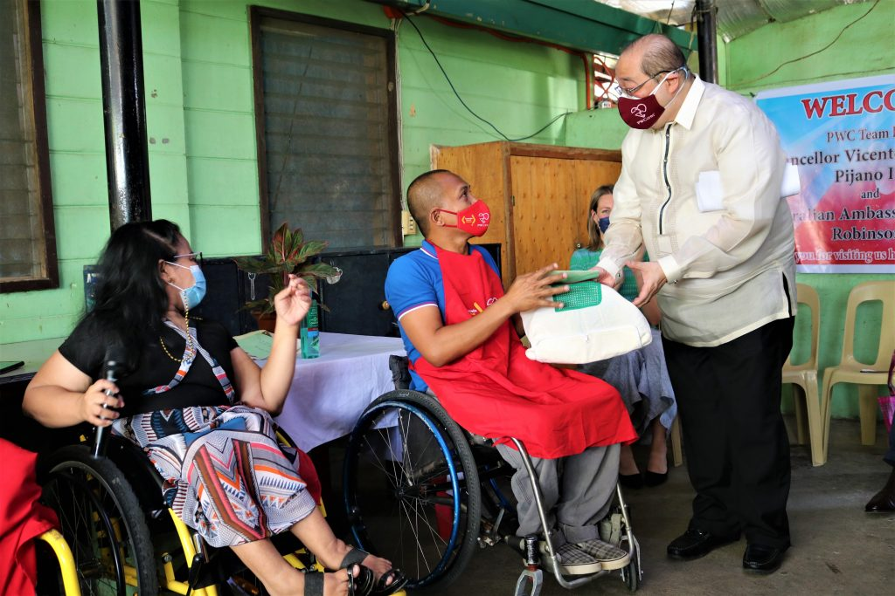
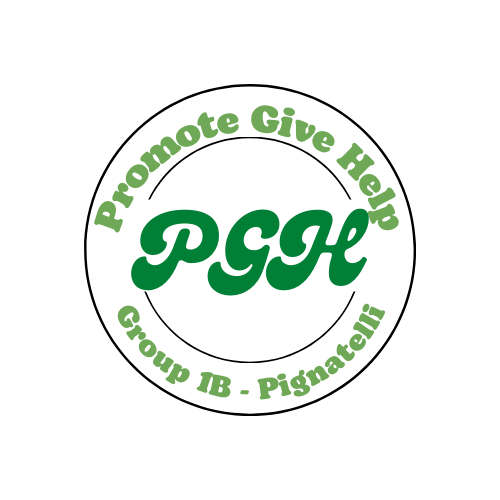
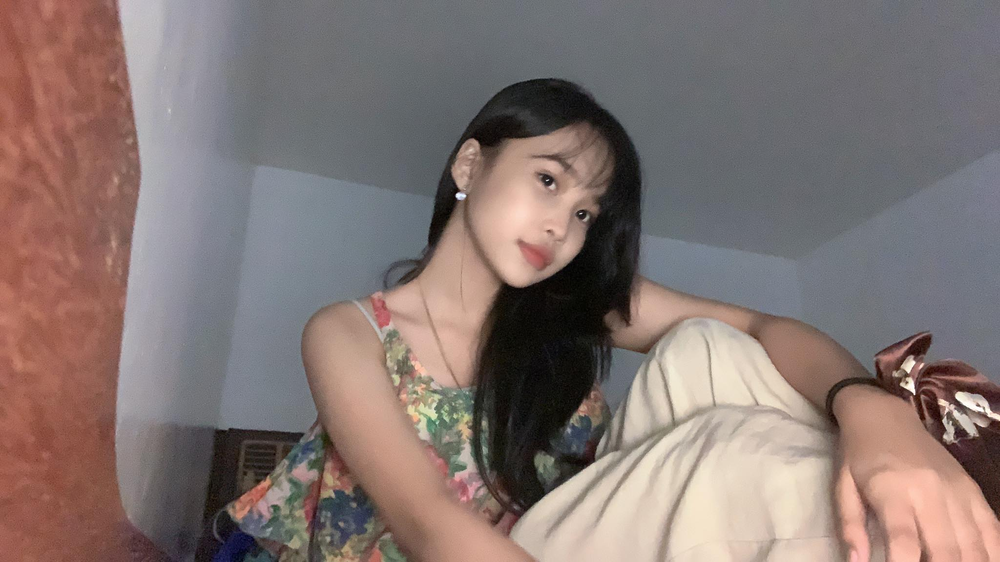

Information about the SAKADAB and the PGH

The important data we gathered about our institution is the financial instability that they are facing. Financial instability is a
problem for the SAKADAB, in which it has forced them to lack basic needs such as in the medical aspect. This was caused by the pandemic,
as less people are visiting the institution, this means they get less income from their asset of making handicraft and due to the
unstable donations of the government and the families of the people living in the community.
This specific problem has been a burden to the people of SAKADAB, most notably because of the effects of the COVID-19 pandemic.
As a group, we aim to fix this problem by engaging many audiences to support our project through our social media posts.
We also plan to give what we can to the institution, such as asking our families to support our project by donating funds,
and also give supplies that we hope can help the SAKADAB. Academically, we were tasked to do our SIP experiment on composting
but due to the limitations of the SAKADAB, we planned on giving the harvested crops from our experiment to them in order to
not waste the supply that we have made.
The project is important for the institution because the project intends to help them in their financial problem stated.
The project is also important to Ateneo students because it gives them an idea on what we aim to achieve as students;
to help those who are in need and to develop good morals in relation to our Ignatian Values. Lastly, the project is
also important for the people because it also inspires them to help, as they are also called to be the Children of God.
In our lessons, we are taught to be liberators, and experience freedom. The people must be inspired to fulfill these in
order to make ourselves closer to God spiritually.
The PGH - What is it and Reflection

Our Project, the PGH, means to promote, give, and help. In this project, we aim to help the SAKADAB
in its pressing concern today; financial instability. The problem of financial instability plays a big
challenge to the SAKADAB since it gives the community a really hard time in allocating their funds.
When we mean by having a hard time allocating their funds, they have to pay for many aspects of livelihood in sacrifice
for many other aspects such as medical needs.
With the project, the SAKADAB community will be able to live without a burden once again.
We hope to benefit the institution with our gathered donations through considering their
needs with the funds. All of these will be done through the help of online utilization
of social media, and through the help of the people around us. In addition, the group
that created PGH individually have roles on how to oversee the project with the addition
of our beloved volunteers. By the end of our project, we aim to get atleast a minimum
of 10,000 pesos. Even if it may sound low economically, we still hope to gain more than
this small amount so that we can concretely and efficiently help the SAKADAB.
Ipapaninindigan namin ang aming gagawing tugon sa problemang nabanggit sa pamamagitan ng
kung paano inaapektuhan ng isyung ito ang mga miyembro ng aming partner institusyon.
Mula noong pandemiya, ang SAKADAB ay inaapektuhan ng maraming problema at tulad rito
ay ang kakulangan ng pondo. Ang problemang ito, ay nakakapekto sa mga mapagkukunan at
mga supply na kinakailangan para sa institusyon. Sa ganitong klase na problema, alam
natin na hindi nila mailutas ang problemang ito, kaya gumawa kami ng proyektong PGH,
Promote, Give, Help. Sa aming proyekto, plano naming maimpluwensyahan ang iba sa
pamamagitan ng social media sa mga donasyon at pag-promote ng mga produkto, ang
handicraft, ng partner na institusyon. Pinag-iisipan rin namin na kami mismo at
ang aming pamilya ay tumulong sa kanila, sa pagbigay ng pondo o sa pagbigay ng
pagkain tulad ng gulay na kinukuha namin sa SIP. Sa proyektong ito, maaaring
matulungan namin ng lubos ang SAKADAB.
ABOUT THE WEB DESIGNER

Jasmine Parrera is a kind and loving girl, sometimes she is slow, and funny and
she is also very supportive of her friends. Although sometimes she is very quiet it’s
just that she doesn’t know how to start a conversation. She is also the one who helped
in making the webpage and she is the iconic dumb gurl who’s basically gonna die first
in a zombie apocalypse (according to her friends). For the PGH, she is known to be the
assistant of the promotional designer in the group.
ABOUT THE WEB DESIGNER
Timothy is an atenean that is determined to see his
group mates strive to their greatest potential. He believes that cooperation and teamwork
can make a group efficiently work together. His interests can vary, some of them can be
sports, music, and etc. This webpage should effectively display our work for the normal
viewer, hopefully you enjoy it. For the PGH, he is known to be the assistant to the engager
and the evaluator.